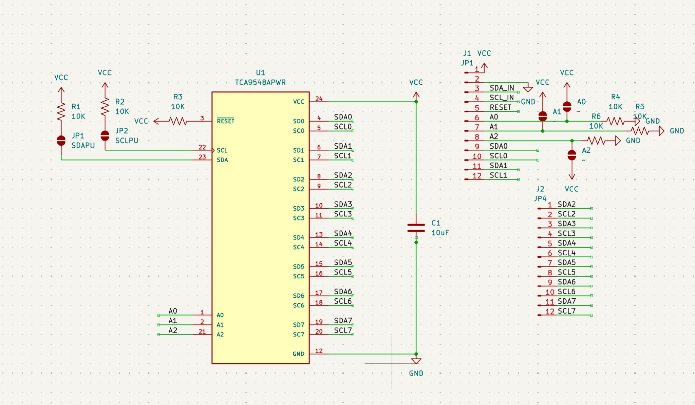
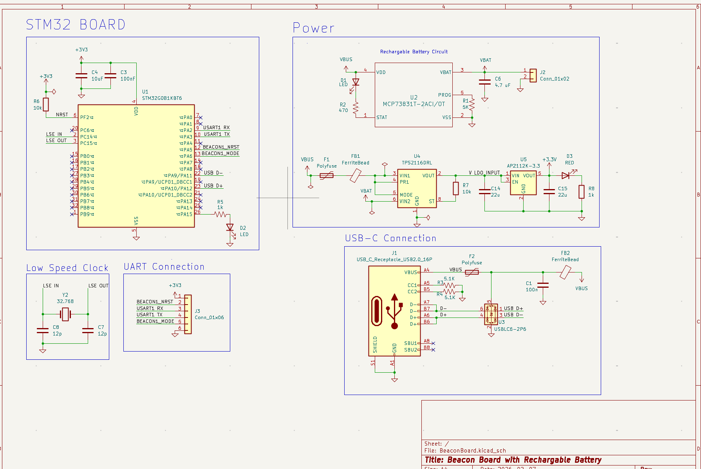

SEDS Lunabotics - Electrical
I²C Power & Communication Hub
Challenge
The rover needed reliable I²C connectivity from the Raspberry Pi to multiple downstream boards—sensors, motor drivers, and peripherals—without address conflicts or bus contention. A single shared bus would limit scalability and make debugging difficult when several devices shared the same protocol.
I had to design a hub that provided address isolation, configurable power (3.3V/5V for different boards), and robust bus behavior (pull-ups, reset handling, protection) while fitting the mechanical and power budget of the rover.
Solution
I designed a modular I²C communication and power distribution hub in KiCad using a Raspberry Pi as the host and a TCA9548A multiplexer for address isolation. The hub supports multiple downstream boards on separate channels, jumper-selectable 3.3V/5V power, and configurable pull-ups and reset handling for bus reliability. Full schematic and PCB layout were completed in KiCad, enabling seamless integration with the team’s ROS2 drivers and control nodes.

Beacon Board
Challenge
The robot needed accurate position tracking on the competition field. The system uses 3 external UWB beacons and 4 on-robot UWB beacons for triangulation. I had to design a board that could power and control these beacons, run reliably in the field, and support recharging instead of disposable batteries.
Requirements included a microcontroller for beacon control and communication, USB-C for programming and power, a rechargeable LiPo with charge management, and a power path that could switch between battery and USB without dropping the load.
Solution
I designed the Beacon Board around an STM32G0 microcontroller with dedicated BEACON1_NRST and BEACON1_MODE signals for UWB beacon control. Power is provided by an MCP73831 Li-Ion/Li-Poly charger, a TPS2116 power multiplexer (battery vs. USB-C), and an AP2112 3.3V LDO for the MCU. The board includes USB-C with ESD protection, a 32.768 kHz crystal for RTC/timing, and a UART header for debugging and external communication. Full schematic and PCB were done in KiCad; the board supports 3 external and 4 on-robot UWB beacons for rover triangulation on the field.
